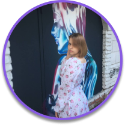

О проекте

Добро пожаловать!
Будем знакомы, меня зовут Филиппова Екатерина, я являюсь студенткой Финансового университета при Правительстве РФ факультета ИТиАБД.
Почему я решила создать этот проект? Думаю, каждый в жизни сталкивался с неудачной потерей ценной вещи и растерянностью: “Куда же теперь обратиться? Как связаться с нашедшим?” Всё это доставляло немалый стресс и занимало уйму времени. Именно поэтому в качестве автоматизации процесса поиска потерянных вещей я создала единую информационную базу “Бюро находок Финансового университета”, которая предоставляет возможность быстрого и удобного поиска потерянных вещей для студентов и сотрудников университета.
Искренне надеюсь, что этот проект сделает Вашу жизнь чуть-чуть проще ;)
Спасибо за внимание!